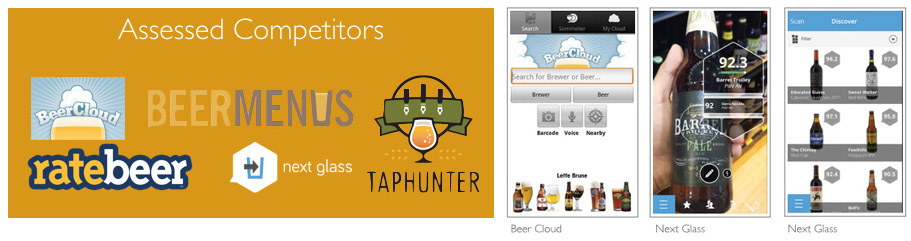
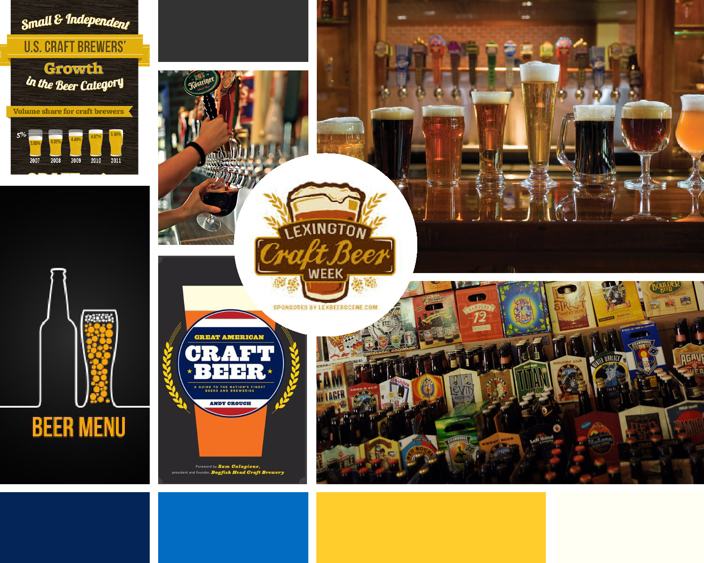

Chicago 1871 startup Savvo recently debuted its second app BeerMapper to help users discover new beers based on personal preferences. As the team's UX designer, I sought to evaluate user benefits, streamline the app’s user flow and simplify its interface for the everyday beer enthusiast.
Project Scope
- Better instruct new users in the onboarding process
- Redesign the beer rating and beer recommendation task flows
Deliverable
- Presentation deck of our research findings and recommendations
- Finalized design assets delivered in a tight three week timeframe
My Role
- User Research Lead
- User Experience Design
- Visual Design Support
Context: The Challenge
From our first meeting with Savvo, we knew they were onto something. This iPad app tapped into a worldwide inventory of 25,000 beers and used an algorithm to predict user preferences based on cues and patterns of their reviews. Such a powerful tool could mean users would never have to try a beer they did not like.

Image from Fast Company's feature on BeerMapper
Well, with great power comes great responsibility, right? While a promising concept, BeerMapper faced a confusing onboarding process and tangled user flow. The tutorial presented poor instructions, and finding beer recommendations was nested in unexpected tasks.
To meet a holiday deadline, our team of four UX and visual designers needed to move fast. Savvo asked for a three week turnaround for the recommendations and design assets. With a combination of a tight deadline and our client's technical capacity, our team focused on the most pressing usability problems. We planned a second phase for after the product launch to tackle larger usability, visual and microinteraction challenges.
Project timeline
Research: Learning about our users
To kick off the project, our team sought to understand users’ behavior and painpoints in selecting and drinking beer. Our research included literature reviews, competitive analyses, user interviews and usability testing.
Literature Reviews
From reviewing academic journals, industry publications and news reports, our research found that:
- People are more likely to use recommendations with reviews and detailed product information. For example, users are more apt to follow Yelp recommendations when they can see hours, location and price, as well as the user reviews.
- Beer drinkers are looking for a more differentiated selection of beers. While United States' beer production has declined 2% in 2014, craft beer consumption has skyrocketed by 27%.
Competitive Analyses
We compared BeerMapper against a dozen top beer recommendation apps. In looking at their functions, interfaces and popularity, we saw that:
- A search function is a central and prominent feature
- User interfaces are light and present minimal data points
- Applications organize information into list or grid formats
User Interviews
With these insights, my teammate Zoe and I interviewed a dozen craft beer lovers, MBA students and sports fans. Our interviews focused on their beer drinking habits, how they found and selected beers, and their feedback on BeerMapper. We discovered:
- People want to discover beers similar to ones they enjoyed in the past.
- Though most users are open to trying new beers, they still choose familiar beers at the grocery store, especially if selecting for a group. People are looking for safe bets outside the bar context.
- People are more likely to try new beers when with friends or when they are just given a recommendation.
Usability Testing
We asked our users to perform a few key tasks, including rating beers, finding a recommendation they liked and building a list of beers they'd like to try. Our tests revealed:
Conflicting visual cues confused users and prevented them from completing tasks. Users misunderstood navigation bar icons, tried many buttons before finding the correct feature and often swiped instead of tapped in the onboarding process.
A clunky user flow with dark patterns created much frustration. When looking for recommendations, users were prompted to rate beers instead.
Search and recommendation results overloaded users with data and did not organize information in meaningful ways. Searches could generate up to 1,000 datapoints with no way of filtering information.
Define: Set Guiding Principles
Creating personas and design principles helped guide our design decisions. We kept these in mind as we designed and made some tough calls.
Provisional Personas
We defined four main users based on how often they drank and where they preferred to drink.

The Couch Potato
Regularly drinks beer while watching TV or after long workdays

The Sports (Bar) Fan
Frequents his favorite sports bar to watch games once or twice a week

The Social Drinker
Loves an excuse to drink beer with friends, either at home or out

The Brewery Fanatic
Has a thirst for adventurous beers and hangs out with beer expert cicerones
Design Principles
Based on the needs we heard from users, we established three guiding principles to anchor our ideation process:
- The recommendation process should be as easy and quick as a Google search.
- BeerMapper should be just as informed as a bartender.
- Onboarding and rating more beers should be natural and fun.
Ideate
In our ideation phase, we first let our imaginations loose to think of what BeerMapper could become. The most promising ideas were then conceptually fleshed out through multiple design iterations.
Brainstorm
We iterated on the user flow and interfaces through sketches, paper prototypes and digital wireframes. Our team worked together to optimize the screen space and visual hierarchy.


Our brainstorm took on many forms: user flow diagrams, wireframe sketches, paper prototypes and digital concept sketches. We reimagined the navigation and wireframes of how users could rate beer
Initial Recommendations
After exploring various directions, our team zeroed in on five recommendations that would carry a stronger impact.
#1: Repurpose the splash screen

BeerMapper's original splash screen

My mock up
- A new splash screen visually communicates the tone and purpose of the application. In our usability tests, our users said that the splash felt too much like a computer game.
- Log in only when necessary. Users are currently prompted to log in before reviewing the app. This is an unnecessary barrier to entry. Instead, now users can explore the app before saving their beer preferences in a new account.
#2: Clarify the tutorial

One of four screens in the original tutorial

Our team's new tutorial
- The new tutorial directs attention – step-by-step. An overwhelming amount of user feedback said that the original tutorial showed no hierarchy.
- The tutorial directs users to tap-and-learn. Visual cues now clarify microinteractions.
#3: Navigate To What Is Important


The original "Get Recommendation button" and our proposed “Beer Me!” button, coined by my clever teammate Dushan.
- Declutter the navigation bar. We redesigned the navigation to have clear icons to only necessary functions. Everything else hides in a dropdown menu.
- Simplify the "Call to Action" button. The original "Get Recommendations" link first took users to rate more beers before finding beer recommendations. Now, we separated those two function, so that "Beer Me" immediately and easily delivers the app's primary function - finding recommendations.
#4: Get Beer Recommendations Faster

The original user flow

The now more streamlined flow
- We dramatically reduced the steps needed for new users to find beer recommendations.
#5: Trust the Recommendation
- Have users understand the beer profile at a glance. We wanted all beer details to be relevant and quickly understandable. We grouped together similar data, like the brewery and origin. Then, we reframed or cut the metrics that were hard to understand.
- Give weight to the information that matters. We enlarged the profile and featured details users seemed to appreciate, like photos and ratings.

The original beer profile

One of the first iterations of beer profile wireframes to better showcase details
Design
Style Guide
We directed the visual design to complement the existing app and be more relatable to craft beer enthusiasts. Our design took inspiration from craft beer labels and trending bars. I created a moodboard to capture the iconography and color treatments that my teammate Zoe and I imagined.
A moodboard inspired by a craft beer aesthetic.
With a rough style guide in hand, Zoe and I just went for it. Zoe led the design for the branding, iconography and typography. I helped create final designs by applying the style direction to wireframes and mock ups.
Testing our designs
Through our iterations, we consistently invited different users to try our prototypes. Through their feedback, we validated our onboarding and user testing steps.
We also had check-ins with our client. In one meeting, our client even caught a large oversight. No affordance was given for a keyboard! Needless to say, their feedback was incredibly helpful throughout the design process.


A selection of final mock ups
Conclusion
Working with Savvo was a great pleasure. We were glad to hear that they loved our final deliverable and even called us a Savvo “dream team”. Also reassuring has been seeing BeerMapper maintain a 4.5 star rating since its Christmas week launch.

BeerMapper is now available in the Apple App Store.
Reflecting back on our design sprint, I learned a few key nuggets:
- Ideate alone and design together. Our best ideas came when we brainstormed alone and refined as a group. Also, each of us had an eye for something different, whether it be visual appeal, simplicity or intuitive microiteractions. Designing together invited constructive feedback and enabled us to iterate quickly.
- Focus on the feasible. Tempted to tackle many amazing ideas, our team synced up best when we were able to distinguish "Phase One" ideas from the "Phase Two" ideas. We needed to focus on feasibility while not dismissing the greater visions of where BeerMapper could go.
The BeerMapper Creative Team
- Project:
- BeerMapper Tablet Application
- Category:
- User Research, User Experience, Interaction Design, Visual Design